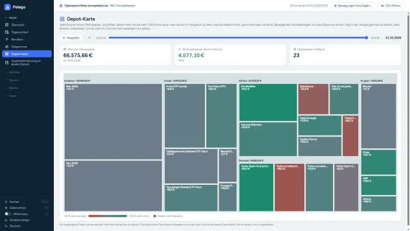
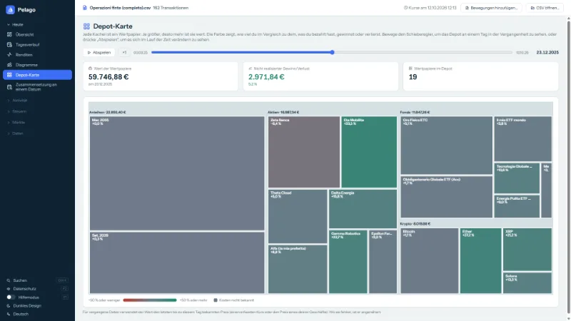
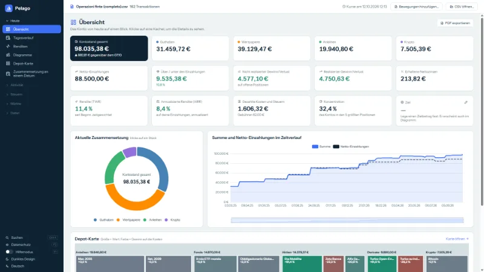
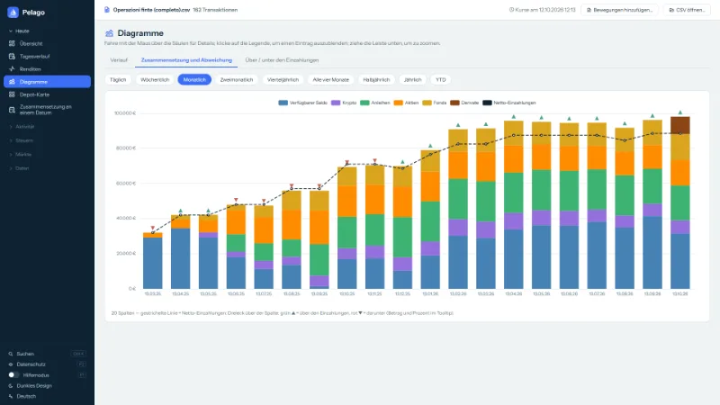
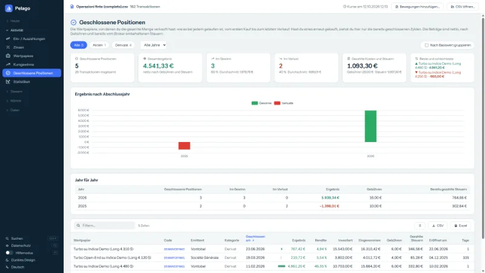
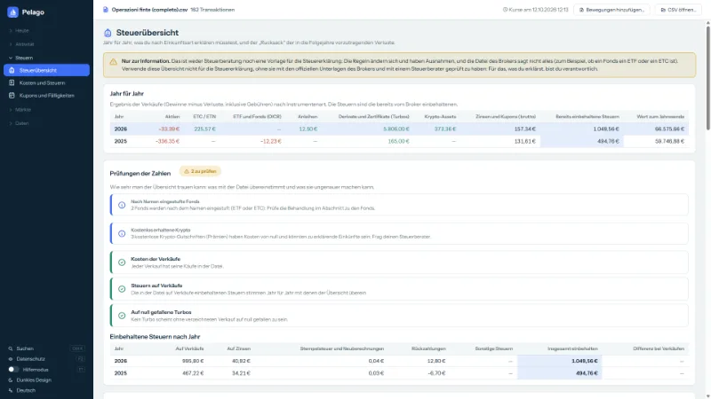
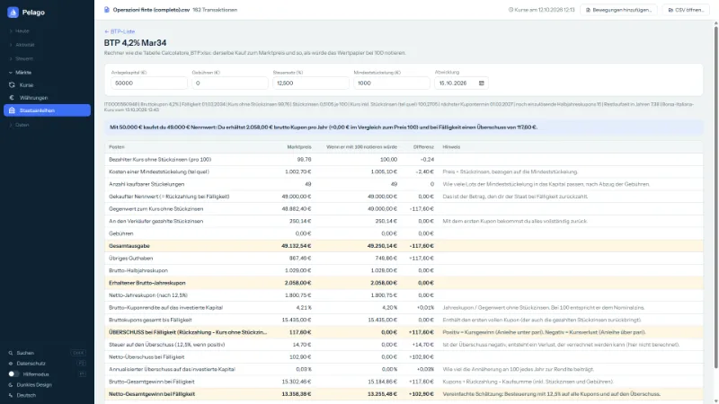
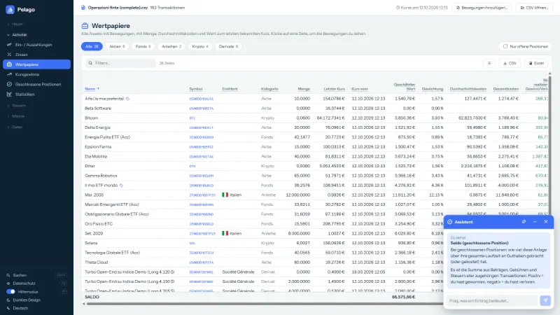
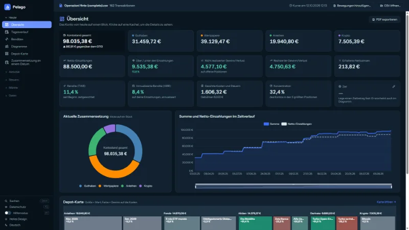

Wie hat sich dein Depot im Lauf der Zeit verändert?
Die CSV-Datei von Trade Republic sagt es dir nicht. Pelago schon: eine Karte aus farbigen Kacheln deines Depots, mit einem Regler, um zu jedem Tag der Vergangenheit zurückzugehen.
Kostenlos, ohne Werbung, freie Software. Alles bleibt auf deinem PC.
Was sie kann
Eine CSV-Datei, viele Arten, sie zu lesen. Die Screenshots zeigen ein Beispielkonto mit erfundenen Daten.
-

Depot-Karte
Eine Kachel pro Wertpapier: je größer, desto mehr ist sie wert; die Farbe zeigt, ob du gegenüber den Kosten im Plus oder Minus liegst.
-

Zeitregler
Wähle einen Tag in der Vergangenheit oder drück auf „Abspielen“ und sieh zu, wie Wertpapiere auftauchen, wachsen und verschwinden.
-

Übersicht
Gesamtwert, Kategorien, Einzahlungen, Renditen und Kosten des Kontos auf einen Blick.
-

Diagramme
Was im Konto war, Monat für Monat, und ob du über oder unter deinen Einzahlungen lagst.
-

Geschlossene Positionen
Wie viel du mit jedem verkauften Wertpapier gewonnen oder verloren hast, netto nach bereits einbehaltenen Gebühren und Steuern.
-

Steuerübersicht
Eine informative Übersicht, Jahr für Jahr. Es sind Schätzungen: Sie ersetzen weder die Unterlagen des Brokers noch einen Steuerberater.
-

BTP und Staatsanleihen
Für Italien die Liste der festverzinslichen BTP: Wähle eine aus und berechne, wie viele du kaufst, die Kupons und den Überschuss bei Fälligkeit.
-

Hilfemodus
Fahr mit der Maus über eine Spalte oder eine Zahl: Pelago erklärt, was sie ist und wie sie berechnet wird.
-

Fünf Sprachen, helles und dunkles Design
Italienisch, Englisch, Französisch, Deutsch und Spanisch. Deine CSV-Datei wird nie verändert; die lokale Sicherung ist nur einen Klick entfernt.


Anachronistisch? Ja, mit Absicht.
Ja, es ist ein Programm für Windows. Im Jahr 2026 wirkt das wie eine Entscheidung aus einer anderen Zeit, und in gewisser Weise ist es das auch: aber nicht aus Nostalgie. Es ist der einfachste Weg, deine Daten dort zu halten, wo sie hingehören.
Niemand hält deine Daten, weil es niemanden gibt, dem du sie geben müsstest.
Kein Server, kein Konto, keine „Cloud“: Deine CSV-Datei bleibt auf deiner Festplatte, dort, wo du sie gespeichert hast.
Die Datei, die du herunterlädst, ist immer dieselbe, und du kannst sie prüfen.
Eine Webseite kann sich bei jedem Besuch ändern, ohne dass du es merkst.
pelago.exehat einen öffentlichen SHA-256-Fingerabdruck, und der Code ist offen: Was du geprüft hast, ist das, was läuft, auch in einem Jahr, auch ohne Internet.Dein PC fragt die Kurse ab, kein Vermittler.
Viele Kursdienste nehmen keine Anfragen von Webseiten an (zum Beispiel Borsa Italiana): Eine Website müsste über einen eigenen Server gehen, der sehen würde, welche Wertpapiere du besitzt. Das Programm fragt sie direkt von dir zu Hause ab und sendet nur Wertpapierkennungen und Daten.
Es funktioniert auch ohne uns.
Kein Abonnement, kein Dienst, der abgeschaltet werden kann: Wenn die Website morgen verschwände, wären das Programm und deine Daten weiterhin da.
Der Preis dieser Entscheidung
Es läuft nur unter Windows, du musst eine Datei herunterladen (deshalb gibt es die Prüfung), Windows zeigt eine Warnung, solange die Datei nicht signiert ist, und Updates sind manuell. Zum Ausprobieren ohne Download gibt es die Demo im Browser, mit erfundenen Daten.
So geht's
CSV herunterladen
Exportiere in deinem Trade-Republic-Konto die CSV-Datei mit den Transaktionen.
Pelago herunterladen
Nimm
pelago.exeaus der neuesten Version und starte sie: Es ist eine einzige Datei, ohne Installation.CSV öffnen
Klick auf „CSV öffnen…“ und wähle die Datei. Deine CSV-Datei wird nie verändert.
Du brauchst Windows 10 oder 11 (64 Bit) und die WebView2 Runtime, die in Windows 11 und in den meisten aktuellen Windows-10-Installationen schon enthalten ist.
Willst du es ohne eigene Daten ausprobieren?
Starte Pelago, ohne eine Datei zu öffnen, und klick auf „Mit einem Beispielkonto ausprobieren“: Es öffnet sich ein zweites Fenster mit einem erfundenen Konto (etwa 160 Transaktionen) in einem temporären Ordner, der beim Schließen verschwindet. Wenn du möchtest, lade die Beispiel-CSV herunter und öffne sie mit „CSV öffnen…“.
Was deinen PC verlässt
- Deine CSV-Datei und deine Daten bleiben auf dem PC. Pelago verlangt nie Login oder Passwort und verbindet sich nicht mit deinem Konto.
- Für Kurse fragt sie öffentliche Dienste ab (Yahoo Finance, CoinGecko, EZB, Borsa Italiana und ein paar weitere) und sendet nur Wertpapierkennungen und Daten: nie Beträge, Mengen oder persönliche Daten.
- Die Kurse für Derivate (Vontobel und Société Générale) sind standardmäßig aus: Du schaltest sie selbst ein, auf der Seite Kurse.
- Der Code ist öffentlich: Du kannst selbst prüfen, dass es nichts anderes gibt.
Prüf es selbst
- Der Code ist öffentlich (GPL-3.0): Du kannst ihn lesen, selbst kompilieren und sehen, was er tut.
-
Jede Version nennt den SHA-256-Fingerabdruck von
pelago.exe. Nach dem Download, in PowerShell:Get-FileHash .\pelago.exe -Algorithm SHA256Vergleiche das Ergebnis mit der Datei
pelago.exe.sha256derselben Version. - Die ausführbare Datei ist nicht digital signiert: Beim ersten Start kann Windows die SmartScreen-Warnung zeigen („Der Computer wurde durch Windows geschützt“). Wir verschweigen das nicht: Wenn du möchtest, kompiliere Pelago aus dem Quellcode.
Häufige Fragen
Ist Pelago offiziell oder mit Trade Republic verbunden?
Nein. Es ist ein privates, inoffizielles Projekt: Es ist weder mit Trade Republic verbunden noch von Trade Republic genehmigt und hat keinen Zugriff auf dein Konto.
Warum ist es keine Website?
Weil so deine Daten auf deinem PC bleiben und das Programm, das du geprüft hast, immer dasselbe ist. Die ganze Überlegung steht hier.
Kann ich es ausprobieren, ohne etwas herunterzuladen?
Ja: Die Demo im Browser verwendet ein Konto mit erfundenen Daten und stellt keine Anfragen ins Internet.
Was kostet sie?
Nichts. Sie ist kostenlos, ohne Werbung und ohne Gewinnabsicht: freie Software (GPL-3.0).
Sind die Zahlen genau?
Es sind aus der Datei berechnete Schätzungen: kein offizieller Kontostand. Die Kurse stammen aus öffentlichen Diensten und können verspätet sein oder fehlen.
Kann ich sie für die Steuererklärung nutzen?
Nicht als einzige Quelle. Die Steuerübersichten sind informative Schätzungen mit vereinfachten Formeln: Prüfe sie mit den offiziellen Unterlagen deines Brokers und mit einem Steuerberater. Für das, was du erklärst, bist du verantwortlich.
Funktioniert sie mit anderen Brokern oder auf Mac und Linux?
Sie ist für die CSV-Datei von Trade Republic gedacht: Mit Dateien anderer Broker gibt es keine Garantie. Vorerst läuft sie nur unter Windows 10/11 (64 Bit).
Wie deinstalliere ich sie?
Lösche pelago.exe: Sie schreibt nichts in die Registry und startet nicht mit dem Computer. Um auch die Daten zu entfernen, lösche den Ordner %LOCALAPPDATA%\Pelago und, falls aktiviert, die Sicherungen unter Dokumente\Pelago backup.
Ich habe einen Fehler gefunden oder eine Idee: Wie melde ich das?
Eröffne ein Issue auf GitHub oder schreib an pelago_claude@gmail.com. Hänge nie deine echte CSV-Datei an: Sie enthält alle deine Transaktionen.
Hinweise und Haftung
Pelago berechnet Werte, Renditen und Steuerübersichten aus der CSV-Datei, die du ihm gibst, mit vereinfachten Formeln: Das sind Schätzungen, die Fehler enthalten oder nicht alle Fälle berücksichtigen können (andere Formate, Kapitalmaßnahmen, Steuerregime, ausländische Steuern). Sie sind kein offizieller Kontostand und keine Finanz-, Rechts- oder Steuerberatung und ersetzen weder die offiziellen Unterlagen deines Brokers noch eine Fachperson: Prüfe die Zahlen immer, bevor du sie verwendest, besonders für die Steuererklärung. Pelago wird „wie besehen“ ohne jegliche Gewährleistung bereitgestellt (GPL-3.0, Abschnitte 15-16): Im gesetzlich zulässigen Rahmen haftet der Autor nicht für Schäden, die aus der Nutzung des Programms oder seiner Ergebnisse entstehen.